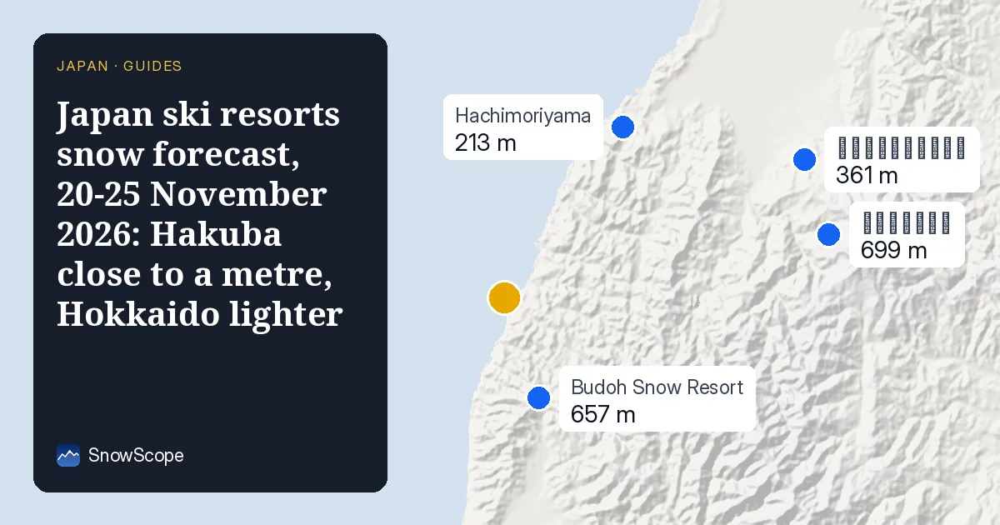
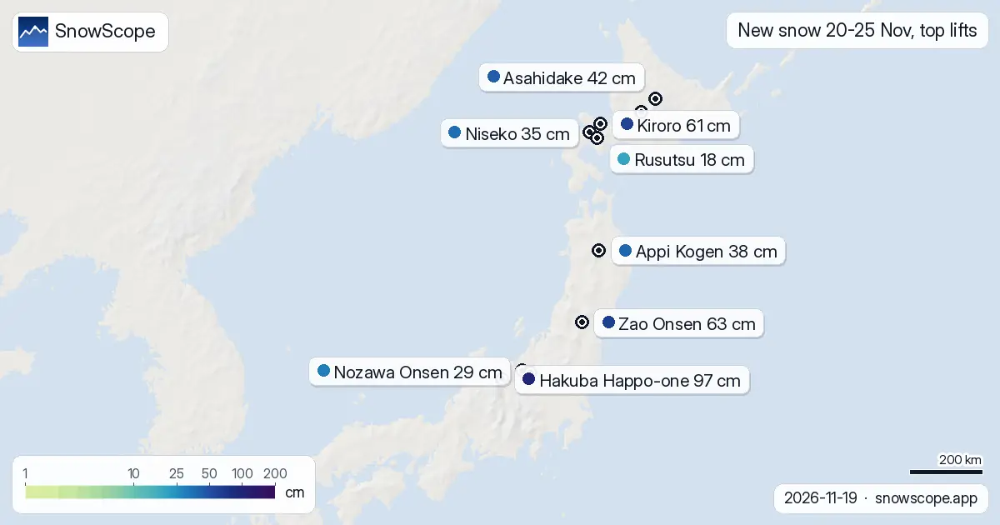
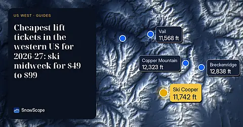

Japan ski resorts snow forecast, 20-25 November 2026: Hakuba close to a metre, Hokkaido lighter
The first real winter storm of the 2026-27 season is heading for Japan, but it will not share its snow evenly. We ran the forecast for the top lifts of 15 well-known resorts, from Asahidake in Hokkaido to Shiga Kogen in Nagano, for the six days from 20 to 25 November. The winner is clear: the Northern Japanese Alps around Hakuba. Hokkaido, the usual favourite, gets much less this time.
See the live snow forecast for Japan in the SnowScope appSnow depth, powder alerts and the 3D map, free.
The ranking: who gets the most snow
At the top of Hakuba Happo-one, at 1,827 m, the middle forecast is about 97 cm of new snow for 20 to 25 November, and the highest forecast reaches 149 cm. The lowest is 95 cm, so every member of the ensemble agrees that this is a big week. Tsugaike Kogen, just north in the same valley, is close behind with about 90 cm at 1,707 m, ranging from 68 cm to 149 cm.
Then comes a group of resorts with roughly half a metre or more: Zao Onsen in Yamagata with about 63 cm at 1,661 m, and Kiroro in Hokkaido with about 61 cm at 1,180 m. Asahidake, the ropeway on the Daisetsuzan volcano, gets about 42 cm at 1,589 m, and Appi Kogen in Iwate about 38 cm at 1,269 m.
Niseko, the most famous name abroad, sits in the middle of the table with about 35 cm at the top, between 19 cm and 45 cm. Further down are Shiga Kogen with 32 cm, Nozawa Onsen with 29 cm, Hakkoda with 26 cm, Kagura with 25 cm and Madarao with 23 cm. Furano gets about 20 cm, Rusutsu about 18 cm, and Sahoro, in the drier east of Hokkaido, only about 6 cm.

How sure is the forecast?
The chart shows more than one number for each resort, because no single forecast should be trusted on its own six days ahead. The bar goes from the lowest to the highest forecast of our ensemble, and the dot is the middle one. A short bar means the forecasts agree; a long one means the storm track or the snow line is still uncertain.
Hakuba is the most solid case: the lowest forecast is 95 cm and the middle 97 cm, so even the most cautious one brings a lot of snow. Zao Onsen is the opposite: the middle forecast is about 63 cm, but the lowest is only 16 cm. For Zao, one forecast keeps the storm further south, so wait a couple of days before you plan around it. Kiroro also has a wide range, from 28 cm to 77 cm.
Why Hakuba and not Niseko this week
In the heart of winter, Hokkaido usually gets the most regular snow, because the cold north-westerly wind from Siberia picks up moisture over the Sea of Japan and drops it on the first mountains it meets. This week's pattern is different: the forecasts put the heaviest snow on the highest ground of Nagano, where the mountains are tallest, not on the hills of western Hokkaido.
Height matters a lot in November. At Hakuba's top lift the forecast stays well below freezing, but at the 751 m base it is rain on 19 and 20 November. That is why the numbers in this ranking are for the top lift: the snow you will find at the bottom of most resorts this week is much less than the totals above.
Which resorts are worth watching
For an early trip, the Hakuba valley is the place to watch this week, with Tsugaike and Happo-one getting the deepest new snow at the top. In Hokkaido, Kiroro and Asahidake look best, both high and both on the snowier side of the island. Zao Onsen could be very good or only average; its forecast will be clearer by the weekend.
Remember that new snow is not the same as an open resort. Most Japanese ski areas open in early to mid-December, and only some high lifts open earlier when the snow allows. Check each resort's own opening date before you book anything, and use the totals here as a sign of where the season will start first.
Follow the forecast every day
SnowScope now covers Japan every day, with snow depth, new snow and the forecast for 525 ski areas from Hokkaido to Kyushu. The map shows where the snow falls each day, and you can follow any resort to get a message when a big snowfall is coming.
Tips for skiers
- Hakuba and Tsugaike: about 90 to 97 cm of new snow at the top from 20 to 25 November.
- Zao Onsen and Kiroro: good middle forecasts, but a wide range; check again in a couple of days.
- Rain is likely at low bases in Nagano on 19 and 20 November; the snow numbers are for the top lifts.
More maps (external sites)
References and credits
- Japan Meteorological Agency, AMeDAS snow depth observations www.jma.go.jp/bosai/map.html#contents=amedas&elem=snow
About these numbers
Snow depth today: measured at Japan's official weather stations at 09:00 Japan time on 19 November 2026; each station measures the snow on its own plot, usually in a town or valley. Coming snow: an ensemble of weather models for each resort's top lift, given as the lowest, middle and highest forecast.
Cite this report
For research, teaching or the press: the numbers and charts are free to reuse under CC BY 4.0 with this citation.
SnowScope (2026), Japan ski resorts snow forecast, 20-25 November 2026: Hakuba close to a metre, Hokkaido lighter, https://snowscope.app/blog/en/2026/11/japan-ski-resorts-snow-forecast-20-25-november-2026.html, accessed 2026-11-19
SnowScope (Atlas Labs). (2026, November 19). Japan ski resorts snow forecast, 20-25 November 2026: Hakuba close to a metre, Hokkaido lighter. SnowScope snow reports. https://snowscope.app/blog/en/2026/11/japan-ski-resorts-snow-forecast-20-25-november-2026.html
BibTeX
@misc{snowscope2026japanskiresortssnowforec,
author = {{SnowScope (Atlas Labs)}},
title = {Japan ski resorts snow forecast, 20-25 November 2026: Hakuba close to a metre, Hokkaido lighter},
year = {2026},
month = nov,
howpublished = {\url{https://snowscope.app/blog/en/2026/11/japan-ski-resorts-snow-forecast-20-25-november-2026.html}},
note = {Published 2026-11-19 12:09 UTC; accessed 2026-11-19}
}· CC BY 4.0 · Methods, data and tools →
Follow Japan
Free: a message when fresh snow is coming, and the forecast every morning.
More snow reports

Heavenly, Sierra-at-Tahoe and Mt. Rose have more snow on 19 November than in any winter since 1980-81. How much fell, the measured gauges, the weather behind it and the best days to go.

Seven independent ski areas in the West where an adult day ticket costs from $49 to $98.8 on weekdays, compared with the snow they usually have in December.

Tornik on Zlatibor had up to 39 cm on its upper slopes on 15 November 2026; by Wednesday it had melted. Kopaonik barely turned white. The week day by day and what comes next.